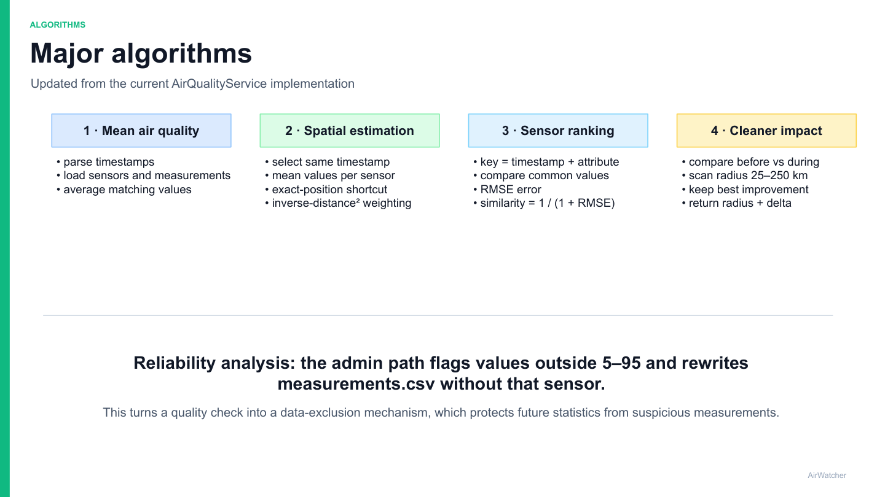
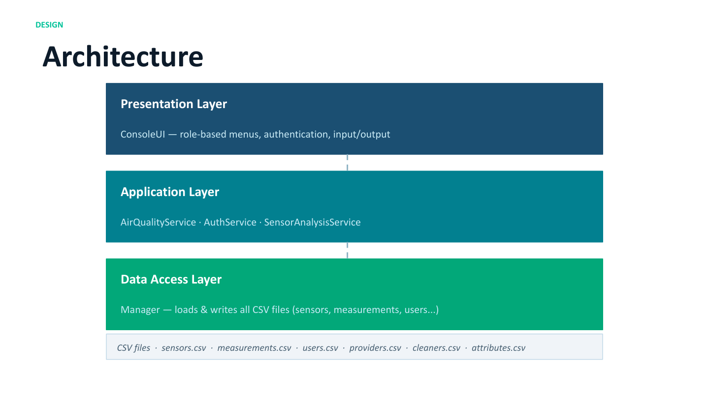

AirWatcher
An air quality monitoring and analysis system developed in C++ during my exchange semester at INSA Lyon, with a focus on algorithms, software architecture, security and sensor reliability.
About the group project
AirWatcher is a C++ console application developed to monitor and analyze air quality using data collected from sensors distributed across a geographical area.
The system can calculate average air quality within an area, estimate air quality at a specific location, compare sensors and detect unreliable sensor data.
The project was developed during my exchange semester at INSA Lyon and gave us the opportunity to work with a larger software system involving algorithms, architecture, data management, security and performance.


Core functionality
AirWatcher provides several tools for analyzing air quality measurements collected from different sensors.
Users can calculate mean air quality for a selected area and time period, estimate air quality at a location without a sensor, and compare sensors based on their measurements.
Administrators also have access to sensor reliability analysis, allowing suspicious or unreliable sensor data to be identified and excluded from future calculations.
Software architecture
AirWatcher uses a layered architecture that separates the console interface, application logic and data access.
The presentation layer handles authentication, role-based menus, user input and displaying results. The application layer contains the main algorithms and services used for air quality analysis.
A separate data access layer handles CSV files containing sensors, measurements, users and other system data. This separation improves modularity, maintainability and testability while preventing users from accessing the underlying files directly.
Algorithms
Several algorithms were implemented for processing and analysing the sensor data.
Mean air quality calculations filter sensor measurements based on location and time before calculating average pollutant values. Spatial estimation is used when air quality needs to be estimated at a position where no sensor is available.
The system also includes functionality for ranking sensors by similarity and analysing whether individual sensors are producing reliable measurements.
What I learned
AirWatcher gave me experience designing and implementing a larger C++ software system rather than focusing on a single isolated algorithm.
The project combined software architecture, algorithms, data handling, performance evaluation and security considerations. It also showed how architectural decisions can make a system easier to maintain, test and extend.